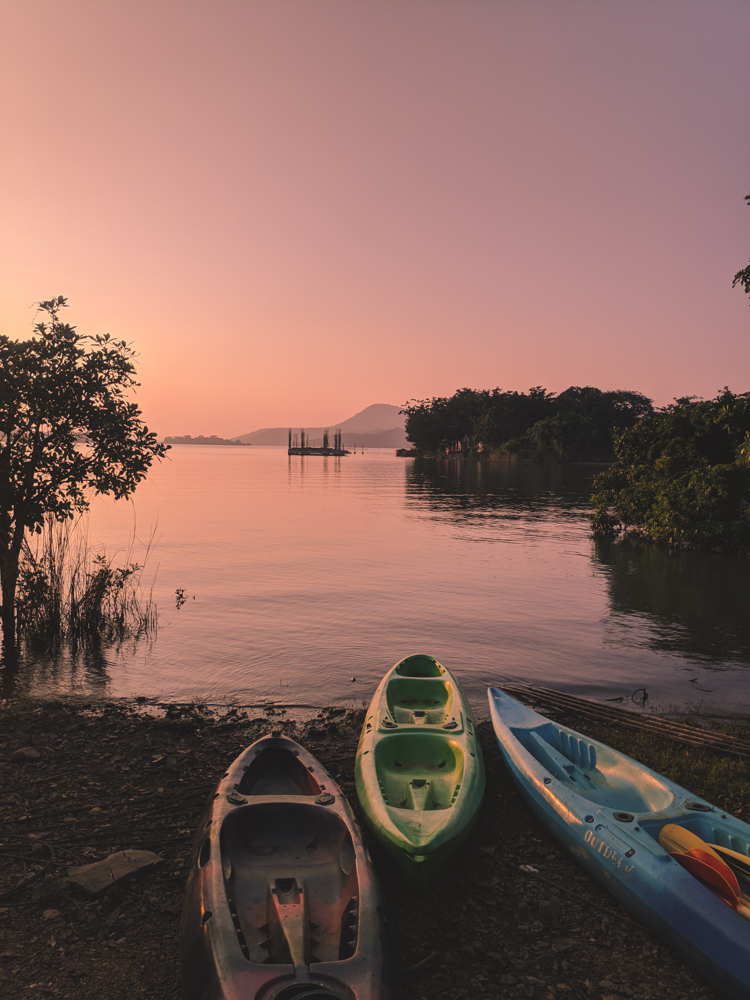
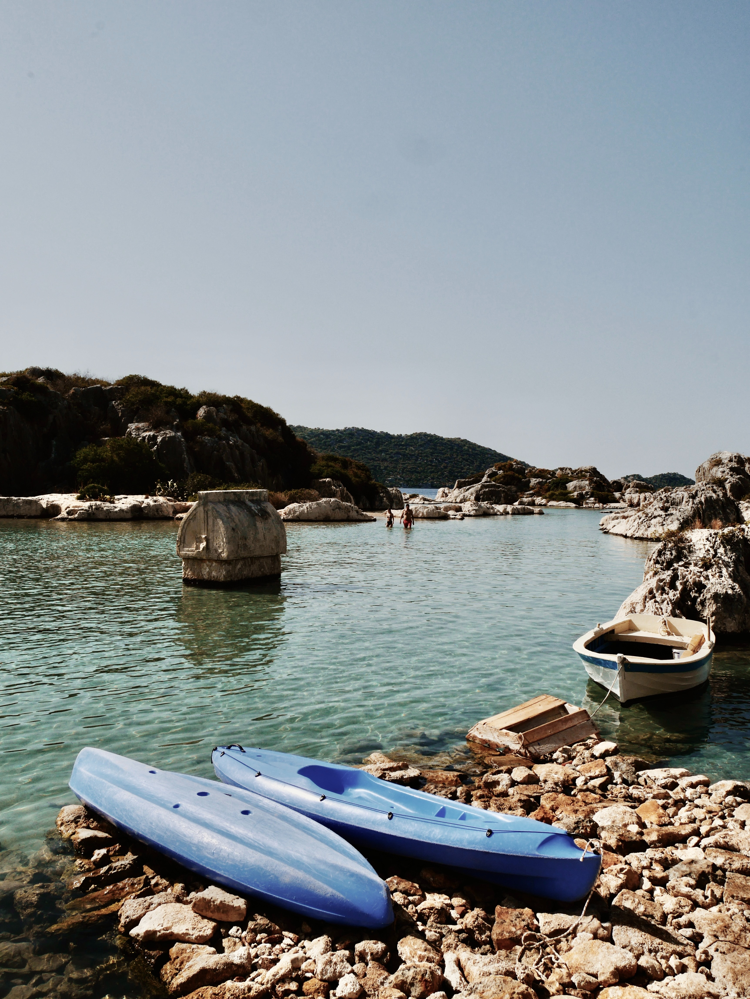

What is a sit on top Kayak?
 A Sit-on-Top kayak, A.K.A the "deck", is a Kayak with an open cockpit that is low in the water line. They can come with paddles and a rudder even on lower end models. Here are some basic point for Sit-on-Top Kayaks!
- Can be difficult for newbies due to balance
- Easy to slip in and out of
- Hard to sink
- Cheaper
- Great for warmer water